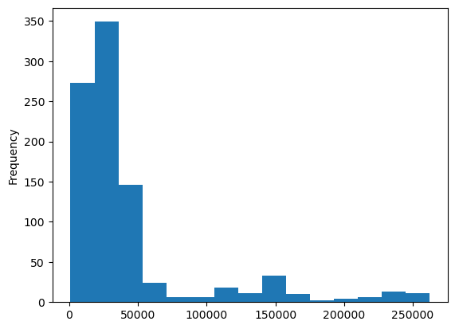
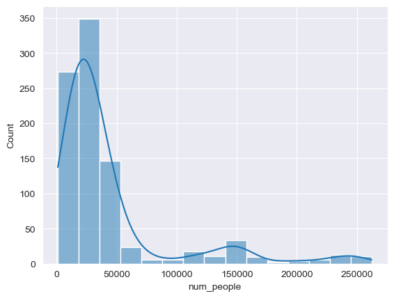
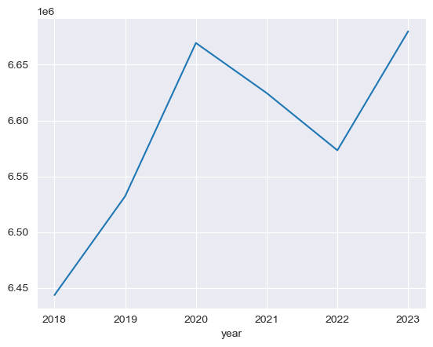
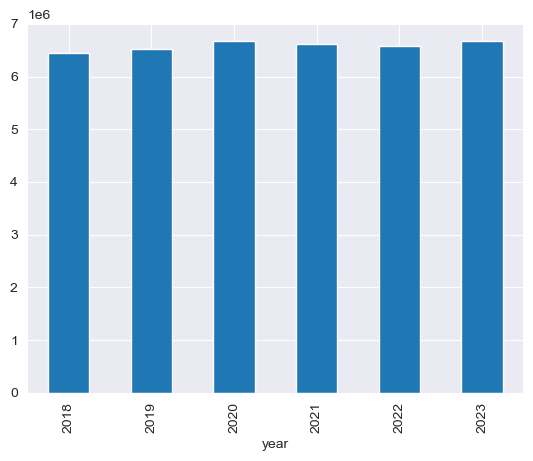
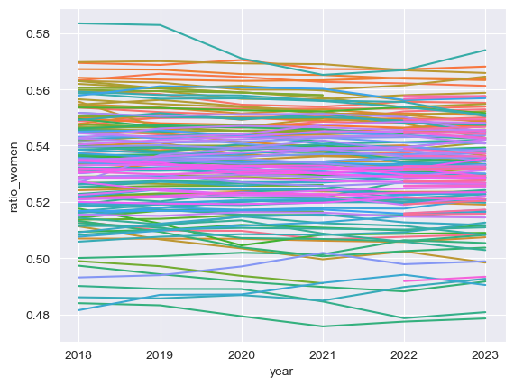

import pandas as pdPandas & Data
Pandas & Data
Now that you know some of the basics of Python Notebooks, it’s time to start using them for data science (no, that simple math you did the last time doesn’t count as data science!).
You are about to enter the Python data ecosystem. This course does not explicitly cover the fundamentals of programming; if you’re stuck, confused, or need further explanation, the answers are more often than not easily accessible through online resources such as your favourite search engine, Stack Overflow, and the amazingly capable explanatory power of emerging AI tools such as ChatGPT. The internet is a friend of every programmer and you’re encouraged to use it effectively from the get-go. There has never been an easier time to learn how to code!
Let’s dig in!
This notebook can be downloaded from here.
Acknowledgements
This section is adapted from the Spatial Data Science for Social Geography by Martin Fleischman, which in turn is based on A Course on Geographic Data Science by Dani Arribas-Bel, both licensed under CC-BY-SA 4.0. The content and datasets were reworked to accommodate the Madrid neighbourhood population statistics dataset.
Munging and wrangling
Real-world datasets are messy. There is no way around it: datasets have “holes” (missing data), the number of formats in which data can be stored can be endless, and the best structure to share data is not always the optimal for analysis. Hence the need to “munge” or “wrangle” data. Much of the time spent in what is called Data Science is related not only to modelling and insight but more often than not has to do with much more basic and less exotic tasks such as obtaining the data, data cleaning, and other preparation which makes analysis possible.
Surprisingly, very little has been published on patterns, techniques, and best practices for quick and efficient data cleaning, manipulation, and transformation because of how labour-intensive this aspect is. In this session, we will use real-world datasets and learn how to transform and manipulate these, if necessary, prior to analysis. For this, we will introduce some of the bread-and-butter of data analysis and scientific computing in Python. These are fundamental tools that are widely and consistently used on almost any tasks relating to data analysis.
This notebook covers the basics and the content that needs to be grasped, and discusses several patterns to clean and structure data properly, including tidying, subsetting, and aggregating. We will conclude with some basic visualisation. An additional extension presents more advanced tricks to manipulate tabular data.
Dataset
We will be exploring demographic characteristics of Madrid. The data has been aggregated to a neighbourhood level by the statistic’s office of Madrid’s City Hall. It contains information per year (from 2018 to 2023) and theme.
As with many datasets that will be used during this course, the data was originally found in an online data portal at the following link
The main tool we will use for this task is the pandas package. As with any Python module or package, the Pandas package has to be imported into the Notebook prior to usage.
Pandas let’s us work with datasets, and stores the information in a DataFrame consisting of rows and columns. Here, we will read an online csv dataset into a Pandas DataFrame. Pandas can open local files directly, but also has the nifty ability to download files directly from the web:
# here we will directly fetch the CSV dataset and save it as a Pandas DataFrame
madrid_pop = pd.read_csv(
"https://datos.madrid.es/egob/catalogo/300557-0-poblacion-distrito-barrio.csv",
sep=";",
)Delimiters
In this case we are using the Pandas
read_csvmethod because the source file is acsv. By default,csvfiles are assumed to use commas for data delimitation, but this file uses semi-colons instead. This is why we are passing the optionalsepparameter to specify a;delimeter.
Formats
Note that
pandasallows for many more formats to be read and written. A full list of formats supported may be found in the documentation.
It is also possible to download the file and read it locally. In this case, you would download the file by clicking on this link. Then place it in the same folder as the notebook where you intend to read it from, and run the below cell.
# remember, this cell will only work if you have downloaded the file
# and, if the filepath is correct!
# uncomment the below lines to run!
# madrid_pop = pd.read_csv(
# "poblacion_1_enero.csv",
# sep=";",
# )Pandas 101
Now, we are ready to start playing and interrogating the dataset! What you have at your fingertips is a table summarising, for each of the districts in Madrid, how many people lived there by gender. These tables are called DataFrame objects, and they have a lot of functionality built-in to explore and manipulate the data they contain. Let’s explore a few of those cool tricks!
Data Structures
The first aspect worth spending a bit of time on is the structure of a DataFrame. You can print it by simply typing its name:
madrid_pop| fecha | cod_municipio | municipio | cod_distrito | distrito | cod_barrio | barrio | num_personas | num_personas_hombres | num_personas_mujeres | |
|---|---|---|---|---|---|---|---|---|---|---|
| 0 | 1 de enero de 2023 | 28079 | Madrid | 1 | Centro | 1 | Centro | 139.687 | 70.770 | 68.917 |
| 1 | 1 de enero de 2023 | 28079 | Madrid | 2 | Arganzuela | 2 | Arganzuela | 153.304 | 71.754 | 81.550 |
| 2 | 1 de enero de 2023 | 28079 | Madrid | 3 | Retiro | 3 | Retiro | 117.918 | 53.458 | 64.460 |
| 3 | 1 de enero de 2023 | 28079 | Madrid | 4 | Salamanca | 4 | Salamanca | 145.702 | 64.452 | 81.250 |
| 4 | 1 de enero de 2023 | 28079 | Madrid | 5 | Chamartín | 5 | Chamartín | 144.796 | 65.245 | 79.551 |
| ... | ... | ... | ... | ... | ... | ... | ... | ... | ... | ... |
| 913 | 1 de enero de 2018 | 28079 | Madrid | 21 | Barajas | 212 | Aeropuerto | 1.794 | 922 | 872 |
| 914 | 1 de enero de 2018 | 28079 | Madrid | 21 | Barajas | 213 | CascoHistóricodeBarajas | 7.336 | 3.550 | 3.786 |
| 915 | 1 de enero de 2018 | 28079 | Madrid | 21 | Barajas | 214 | Timón | 11.750 | 5.651 | 6.099 |
| 916 | 1 de enero de 2018 | 28079 | Madrid | 21 | Barajas | 215 | Corralejos | 7.510 | 3.657 | 3.853 |
| 917 | 1 de enero de 2018 | 28079 | Madrid | Todos | Todos | Todos | Todos | 3.221.824 | 1.500.340 | 1.721.484 |
918 rows × 10 columns
As you can expect, the dataset was provided in the original local language, so to make things a little easier, we are going to translate the column names using one list of texts. for this we will reassign the column names corresponding to their English equivalents.
Note that there are multiple ways of arriving at the same output, the below is just one of them
en_cols = [
"date",
"code_municipality",
"municipality",
"code_district",
"district",
"code_neighbourhood",
"neighbourhood",
"num_people",
"num_people_men",
"num_people_women",
]
madrid_pop.columns = en_cols
madrid_pop| date | code_municipality | municipality | code_district | district | code_neighbourhood | neighbourhood | num_people | num_people_men | num_people_women | |
|---|---|---|---|---|---|---|---|---|---|---|
| 0 | 1 de enero de 2023 | 28079 | Madrid | 1 | Centro | 1 | Centro | 139.687 | 70.770 | 68.917 |
| 1 | 1 de enero de 2023 | 28079 | Madrid | 2 | Arganzuela | 2 | Arganzuela | 153.304 | 71.754 | 81.550 |
| 2 | 1 de enero de 2023 | 28079 | Madrid | 3 | Retiro | 3 | Retiro | 117.918 | 53.458 | 64.460 |
| 3 | 1 de enero de 2023 | 28079 | Madrid | 4 | Salamanca | 4 | Salamanca | 145.702 | 64.452 | 81.250 |
| 4 | 1 de enero de 2023 | 28079 | Madrid | 5 | Chamartín | 5 | Chamartín | 144.796 | 65.245 | 79.551 |
| ... | ... | ... | ... | ... | ... | ... | ... | ... | ... | ... |
| 913 | 1 de enero de 2018 | 28079 | Madrid | 21 | Barajas | 212 | Aeropuerto | 1.794 | 922 | 872 |
| 914 | 1 de enero de 2018 | 28079 | Madrid | 21 | Barajas | 213 | CascoHistóricodeBarajas | 7.336 | 3.550 | 3.786 |
| 915 | 1 de enero de 2018 | 28079 | Madrid | 21 | Barajas | 214 | Timón | 11.750 | 5.651 | 6.099 |
| 916 | 1 de enero de 2018 | 28079 | Madrid | 21 | Barajas | 215 | Corralejos | 7.510 | 3.657 | 3.853 |
| 917 | 1 de enero de 2018 | 28079 | Madrid | Todos | Todos | Todos | Todos | 3.221.824 | 1.500.340 | 1.721.484 |
918 rows × 10 columns
The default printing is truncated to keep a compact view, but is enough to convey its structure. DataFrame objects have two dimensions: rows and columns. Rows are typically identified with an index column and columns are typically identified with names describing their content. The above example shows how the column names were automatically lifted from the csv file’s column headers.
We can set the row index using the set_index() method. Let’s set the index to use the district column.
# Remove leading and trailing spaces from 'distrito'
madrid_pop["district"] = madrid_pop["district"].str.strip()
# set the index based on the district column
madrid_pop.set_index("district", inplace=True)Columns can be assigned as one of various forms of data such as integers as int, decimals as float, text as str, or if pandas is unable to use a standard type, it might use the object type as a catch-all type.
To extract a single column from this DataFrame, specify its name in square brackets ([]). Note that the name is a string - a piece of text - which needs to be denoted with single (') or double quotes ("). Without the quotes, Python will think you are referring to a variable, and will then complain that the variable can’t be found!
A single column is not a DataFrame but a Series, which also means that a DataFrame is a collection of Series!
# this will fetch and return the num_people_women column as a Series
madrid_pop["num_people_women"]district
Centro 68.917
Arganzuela 81.550
Retiro 64.460
Salamanca 81.250
Chamartín 79.551
...
Barajas 872
Barajas 3.786
Barajas 6.099
Barajas 3.853
Todos 1.721.484
Name: num_people_women, Length: 918, dtype: objectInspect
You can specifically print the DataFrames top (or bottom) lines by passing a number to the method head or tail. For example, for the top or bottom three lines:
madrid_pop.head(3)| date | code_municipality | municipality | code_district | code_neighbourhood | neighbourhood | num_people | num_people_men | num_people_women | |
|---|---|---|---|---|---|---|---|---|---|
| district | |||||||||
| Centro | 1 de enero de 2023 | 28079 | Madrid | 1 | 1 | Centro | 139.687 | 70.770 | 68.917 |
| Arganzuela | 1 de enero de 2023 | 28079 | Madrid | 2 | 2 | Arganzuela | 153.304 | 71.754 | 81.550 |
| Retiro | 1 de enero de 2023 | 28079 | Madrid | 3 | 3 | Retiro | 117.918 | 53.458 | 64.460 |
madrid_pop.tail(3)| date | code_municipality | municipality | code_district | code_neighbourhood | neighbourhood | num_people | num_people_men | num_people_women | |
|---|---|---|---|---|---|---|---|---|---|
| district | |||||||||
| Barajas | 1 de enero de 2018 | 28079 | Madrid | 21 | 214 | Timón | 11.750 | 5.651 | 6.099 |
| Barajas | 1 de enero de 2018 | 28079 | Madrid | 21 | 215 | Corralejos | 7.510 | 3.657 | 3.853 |
| Todos | 1 de enero de 2018 | 28079 | Madrid | Todos | Todos | Todos | 3.221.824 | 1.500.340 | 1.721.484 |
Inspecting datasets is vital to find errors that might skew your analysis. The last row of the dataset contains the sums of other column values ( Spanish: Todos -> English: All ).
Before continuing, let’s fix this by removing these columns from the dataset. First, let’s check if we have any more occurrences of Todos. We can use Pandas’ loc indexer to fetch rows where the index column contains the text string Todos.
madrid_pop.loc["Todos"]| date | code_municipality | municipality | code_district | code_neighbourhood | neighbourhood | num_people | num_people_men | num_people_women | |
|---|---|---|---|---|---|---|---|---|---|
| district | |||||||||
| Todos | 1 de enero de 2023 | 28079 | Madrid | Todos | Todos | Todos | 3.339.931 | 1.559.866 | 1.780.065 |
| Todos | 1 de enero de 2022 | 28079 | Madrid | Todos | Todos | Todos | 3.286.662 | 1.534.824 | 1.751.838 |
| Todos | 1 de enero de 2021 | 28079 | Madrid | Todos | Todos | Todos | 3.312.310 | 1.545.157 | 1.767.153 |
| Todos | 1 de enero de 2020 | 28079 | Madrid | Todos | Todos | Todos | 3.334.730 | 1.554.732 | 1.779.998 |
| Todos | 1 de enero de 2019 | 28079 | Madrid | Todos | Todos | Todos | 3.266.126 | 1.521.178 | 1.744.948 |
| Todos | 1 de enero de 2018 | 28079 | Madrid | Todos | Todos | Todos | 3.221.824 | 1.500.340 | 1.721.484 |
Now that we know that for every year the data has been aggregated and added back as a new row, we know that removing the last row would not be enough to correct our DataFrame.
We will make use of the drop function in combination with the native loc function of DataFrames.
print("Rows before droping values: ", len(madrid_pop))
madrid_pop.drop(index="Todos", inplace=True)
print("Rows after droping values: ", len(madrid_pop))Rows before droping values: 918
Rows after droping values: 912Now, let’s get an overview of the table:
madrid_pop.info()<class 'pandas.core.frame.DataFrame'>
Index: 912 entries, Centro to Barajas
Data columns (total 9 columns):
# Column Non-Null Count Dtype
--- ------ -------------- -----
0 date 912 non-null object
1 code_municipality 912 non-null int64
2 municipality 912 non-null object
3 code_district 912 non-null object
4 code_neighbourhood 912 non-null object
5 neighbourhood 912 non-null object
6 num_people 912 non-null object
7 num_people_men 912 non-null object
8 num_people_women 912 non-null object
dtypes: int64(1), object(8)
memory usage: 71.2+ KBCan you spot something wrong?
Integer numbers are sometimes stored as text values, especially if the input dataset contained commas, periods, or null data values. The actual values of population counts would be better stored as full integers so that we can more effectively work with this data as a numeric data type. Let’s take the following steps:
- Create a list containg the column names that have people counts
- Loop through the list, removing periods from the numbers, then casting the values to integer types while allowing for
nulldata values
# List of columns to process
columns_to_process = ["num_people", "num_people_men", "num_people_women"]
# Loop through columns
for column in columns_to_process:
# create a copy of the column
dirty_numbers = madrid_pop[column]
# remove "." from the numbers
clean_numbers = dirty_numbers.str.replace(".", "")
# convert to numeric - coerce will convert non numeric values to NaN (Not a Number) or "null" types
numeric_numbers = pd.to_numeric(clean_numbers, errors="coerce")
# overwrite the original column
madrid_pop[column] = numeric_numbers
madrid_pop.info()<class 'pandas.core.frame.DataFrame'>
Index: 912 entries, Centro to Barajas
Data columns (total 9 columns):
# Column Non-Null Count Dtype
--- ------ -------------- -----
0 date 912 non-null object
1 code_municipality 912 non-null int64
2 municipality 912 non-null object
3 code_district 912 non-null object
4 code_neighbourhood 912 non-null object
5 neighbourhood 912 non-null object
6 num_people 912 non-null int64
7 num_people_men 912 non-null int64
8 num_people_women 912 non-null int64
dtypes: int64(4), object(5)
memory usage: 71.2+ KBSummary Statistics
madrid_pop.describe()| code_municipality | num_people | num_people_men | num_people_women | |
|---|---|---|---|---|
| count | 912.0 | 912.000000 | 912.000000 | 912.000000 |
| mean | 28079.0 | 43336.804825 | 20210.739035 | 23126.065789 |
| std | 0.0 | 51564.255101 | 24072.657139 | 27522.444389 |
| min | 28079.0 | 945.000000 | 490.000000 | 455.000000 |
| 25% | 28079.0 | 17330.500000 | 8132.000000 | 9267.250000 |
| 50% | 28079.0 | 24700.500000 | 11580.000000 | 13640.000000 |
| 75% | 28079.0 | 42166.500000 | 19700.250000 | 22349.750000 |
| max | 28079.0 | 262339.000000 | 122632.000000 | 139707.000000 |
Note how the output is also a DataFrame object, so you can manipulate it the same way that you would with the original table (e.g. writing it to a file).
In this case, the summary might be better presented if the table is “transposed”:
madrid_pop[columns_to_process].describe().T| count | mean | std | min | 25% | 50% | 75% | max | |
|---|---|---|---|---|---|---|---|---|
| num_people | 912.0 | 43336.804825 | 51564.255101 | 945.0 | 17330.50 | 24700.5 | 42166.50 | 262339.0 |
| num_people_men | 912.0 | 20210.739035 | 24072.657139 | 490.0 | 8132.00 | 11580.0 | 19700.25 | 122632.0 |
| num_people_women | 912.0 | 23126.065789 | 27522.444389 | 455.0 | 9267.25 | 13640.0 | 22349.75 | 139707.0 |
Equally, common descriptive statistics are also available. To obtain minimum values for each column, you can use .min().
madrid_pop.min()date 1 de enero de 2018
code_municipality 28079
municipality Madrid
code_district 1
code_neighbourhood 1
neighbourhood Arganzuela
num_people 945
num_people_men 490
num_people_women 455
dtype: objectOr to obtain a minimum for a single column only.
madrid_pop["num_people_women"].min()455Note here how you have restricted the calculation of the minimum value to one column only by getting the Series and calling .min() on that.
Similarly, you can restrict the calculations to a single district using .loc[] indexer:
madrid_pop.loc["Centro"].min()date 1 de enero de 2018
code_municipality 28079
municipality Madrid
code_district 1
code_neighbourhood 1
neighbourhood Centro
num_people 7201
num_people_men 3672
num_people_women 3529
dtype: objectLet’s see when and where the said minimum occurred.
# we can use comparators to index into the DataFrame where a specific column equals a specific value
madrid_pop[madrid_pop["num_people_women"] == 3529]| date | code_municipality | municipality | code_district | code_neighbourhood | neighbourhood | num_people | num_people_men | num_people_women | |
|---|---|---|---|---|---|---|---|---|---|
| district | |||||||||
| Centro | 1 de enero de 2018 | 28079 | Madrid | 1 | 16 | Sol | 7201 | 3672 | 3529 |
Create new columns
You can generate new variables by applying operations to existing ones. For example, you can calculate the ratio of women.
ratio_women = madrid_pop["num_people_women"] / madrid_pop["num_people"]
ratio_women.head()district
Centro 0.493367
Arganzuela 0.531950
Retiro 0.546651
Salamanca 0.557645
Chamartín 0.549401
dtype: float64Once you have created the variable, you can make it part of the table:
madrid_pop["ratio_women"] = ratio_women
madrid_pop.head()| date | code_municipality | municipality | code_district | code_neighbourhood | neighbourhood | num_people | num_people_men | num_people_women | ratio_women | |
|---|---|---|---|---|---|---|---|---|---|---|
| district | ||||||||||
| Centro | 1 de enero de 2023 | 28079 | Madrid | 1 | 1 | Centro | 139687 | 70770 | 68917 | 0.493367 |
| Arganzuela | 1 de enero de 2023 | 28079 | Madrid | 2 | 2 | Arganzuela | 153304 | 71754 | 81550 | 0.531950 |
| Retiro | 1 de enero de 2023 | 28079 | Madrid | 3 | 3 | Retiro | 117918 | 53458 | 64460 | 0.546651 |
| Salamanca | 1 de enero de 2023 | 28079 | Madrid | 4 | 4 | Salamanca | 145702 | 64452 | 81250 | 0.557645 |
| Chamartín | 1 de enero de 2023 | 28079 | Madrid | 5 | 5 | Chamartín | 144796 | 65245 | 79551 | 0.549401 |
Index-based queries
Here, you explore how to subset parts of a DataFrame if you know exactly which bits you want.
For example, if you want to extract the “date”, “neighbourhood”, and “ratio_women” columns for the “Centro” and “Retiro” districts, you can use the Pandas loc indexer. Indexing in Pandas is very flexible and powerful, but can also be a bit confusing for the same reason. The loc documentation and some back-and-forth with AI can be helpful in clearing up points of confusion!
women_ratio_2districts = madrid_pop.loc[
["Centro", "Retiro"], # the rows to retrieve
["date", "neighbourhood", "ratio_women"], # the columns to retrieve
]
women_ratio_2districts| date | neighbourhood | ratio_women | |
|---|---|---|---|
| district | |||
| Centro | 1 de enero de 2023 | Centro | 0.493367 |
| Centro | 1 de enero de 2023 | Palacio | 0.508234 |
| Centro | 1 de enero de 2023 | Embajadores | 0.478530 |
| Centro | 1 de enero de 2023 | Cortes | 0.505362 |
| Centro | 1 de enero de 2023 | Justicia | 0.491685 |
| ... | ... | ... | ... |
| Retiro | 1 de enero de 2018 | Adelfas | 0.540638 |
| Retiro | 1 de enero de 2018 | Estrella | 0.535416 |
| Retiro | 1 de enero de 2018 | Ibiza | 0.562966 |
| Retiro | 1 de enero de 2018 | LosJerónimos | 0.531449 |
| Retiro | 1 de enero de 2018 | NiñoJesús | 0.545746 |
84 rows × 3 columns
You can see how you can create a list with the names (index IDs) along each of the two dimensions of a DataFrame (rows and columns), and loc will return a subset of the original table only with the elements queried for.
An alternative to list-based queries is what is called “range-based” queries. These work on the indices of the table, but instead of requiring the ID of each item you want to retrieve, they operate by requiring only two IDs: the first and last element in a range of items. Range queries are expressed with a colon (:). However, to perform this operation Index IDs need to be unique. Since this is not our case we will first create a new index composed the year and the code_neighbourhood as a new index to our DataFrame.
# Reset the index to move 'district' back to a regular column
madrid_pop.reset_index(inplace=True)
# Extract the last 4 digits from the 'date' column and create a new 'year' column
madrid_pop["year"] = madrid_pop["date"].str[-4:]
# Create a new column with the combination of 'year' and 'code_neighbourhood'
madrid_pop["new_index"] = madrid_pop["year"] + "_" + madrid_pop["code_neighbourhood"]
# Set this as the new index
madrid_pop.set_index("new_index", inplace=True)
madrid_pop.head(3)| district | date | code_municipality | municipality | code_district | code_neighbourhood | neighbourhood | num_people | num_people_men | num_people_women | ratio_women | year | |
|---|---|---|---|---|---|---|---|---|---|---|---|---|
| new_index | ||||||||||||
| 2023_1 | Centro | 1 de enero de 2023 | 28079 | Madrid | 1 | 1 | Centro | 139687 | 70770 | 68917 | 0.493367 | 2023 |
| 2023_2 | Arganzuela | 1 de enero de 2023 | 28079 | Madrid | 2 | 2 | Arganzuela | 153304 | 71754 | 81550 | 0.531950 | 2023 |
| 2023_3 | Retiro | 1 de enero de 2023 | 28079 | Madrid | 3 | 3 | Retiro | 117918 | 53458 | 64460 | 0.546651 | 2023 |
Look at the order of the row and column indexes. This is important becuase “range-based” queries assume you understand the order and arrangement.
# return all content between rows "2019_1":"2018_1" and columns "num_people":"num_people_women"
range_query = madrid_pop.loc["2019_1":"2018_1", "num_people":"num_people_women"]
range_query| num_people | num_people_men | num_people_women | |
|---|---|---|---|
| new_index | |||
| 2019_1 | 134881 | 67829 | 67052 |
| 2019_2 | 153830 | 71631 | 82199 |
| 2019_3 | 119379 | 54098 | 65281 |
| 2019_4 | 146148 | 64395 | 81753 |
| 2019_5 | 145865 | 65565 | 80300 |
| ... | ... | ... | ... |
| 2019_212 | 1851 | 952 | 899 |
| 2019_213 | 7565 | 3648 | 3917 |
| 2019_214 | 12388 | 5916 | 6472 |
| 2019_215 | 7642 | 3746 | 3896 |
| 2018_1 | 132352 | 66320 | 66032 |
153 rows × 3 columns
The range query picks up all the elements between the specified IDs. Note that for this to work, the first ID in the range needs to be placed before the second one in the table’s index.
Once you know about list and range-based queries, you can combine them!
Condition-based queries
However, sometimes, you do not know exactly which observations you want, but you do know what conditions they need to satisfy (e.g. areas with more than 2,000 inhabitants). For these cases, DataFrames support selection based on conditions. Let us see a few examples. Suppose you want to select…
… neighbourhoods wich over time have had less than 50% of women
fewer_women = madrid_pop[madrid_pop["ratio_women"] < 0.5]
fewer_women| district | date | code_municipality | municipality | code_district | code_neighbourhood | neighbourhood | num_people | num_people_men | num_people_women | ratio_women | year | |
|---|---|---|---|---|---|---|---|---|---|---|---|---|
| new_index | ||||||||||||
| 2023_1 | Centro | 1 de enero de 2023 | 28079 | Madrid | 1 | 1 | Centro | 139687 | 70770 | 68917 | 0.493367 | 2023 |
| 2023_12 | Centro | 1 de enero de 2023 | 28079 | Madrid | 1 | 12 | Embajadores | 46204 | 24094 | 22110 | 0.478530 | 2023 |
| 2023_14 | Centro | 1 de enero de 2023 | 28079 | Madrid | 1 | 14 | Justicia | 18219 | 9261 | 8958 | 0.491685 | 2023 |
| 2023_16 | Centro | 1 de enero de 2023 | 28079 | Madrid | 1 | 16 | Sol | 8164 | 4239 | 3925 | 0.480769 | 2023 |
| 2023_81 | Fuencarral-El Pardo | 1 de enero de 2023 | 28079 | Madrid | 8 | 81 | ElPardo | 3421 | 1716 | 1705 | 0.498392 | 2023 |
| 2023_106 | Latina | 1 de enero de 2023 | 28079 | Madrid | 10 | 106 | CuatroVientos | 6122 | 3068 | 3054 | 0.498857 | 2023 |
| 2023_194 | Vicálvaro | 1 de enero de 2023 | 28079 | Madrid | 19 | 194 | ElCañaveral | 13054 | 6652 | 6402 | 0.490424 | 2023 |
| 2023_212 | Barajas | 1 de enero de 2023 | 28079 | Madrid | 21 | 212 | Aeropuerto | 1902 | 965 | 937 | 0.492639 | 2023 |
| 2022_1 | Centro | 1 de enero de 2022 | 28079 | Madrid | 1 | 1 | Centro | 139682 | 70986 | 68696 | 0.491803 | 2022 |
| 2022_12 | Centro | 1 de enero de 2022 | 28079 | Madrid | 1 | 12 | Embajadores | 46444 | 24271 | 22173 | 0.477414 | 2022 |
| 2022_14 | Centro | 1 de enero de 2022 | 28079 | Madrid | 1 | 14 | Justicia | 18015 | 9221 | 8794 | 0.488149 | 2022 |
| 2022_16 | Centro | 1 de enero de 2022 | 28079 | Madrid | 1 | 16 | Sol | 8117 | 4232 | 3885 | 0.478625 | 2022 |
| 2022_106 | Latina | 1 de enero de 2022 | 28079 | Madrid | 10 | 106 | CuatroVientos | 5966 | 2996 | 2970 | 0.497821 | 2022 |
| 2022_194 | Vicálvaro | 1 de enero de 2022 | 28079 | Madrid | 19 | 194 | ElCañaveral | 8944 | 4525 | 4419 | 0.494074 | 2022 |
| 2022_212 | Barajas | 1 de enero de 2022 | 28079 | Madrid | 21 | 212 | Aeropuerto | 1895 | 967 | 928 | 0.489710 | 2022 |
| 2021_1 | Centro | 1 de enero de 2021 | 28079 | Madrid | 1 | 1 | Centro | 141236 | 71881 | 69355 | 0.491058 | 2021 |
| 2021_12 | Centro | 1 de enero de 2021 | 28079 | Madrid | 1 | 12 | Embajadores | 47238 | 24767 | 22471 | 0.475698 | 2021 |
| 2021_14 | Centro | 1 de enero de 2021 | 28079 | Madrid | 1 | 14 | Justicia | 18208 | 9291 | 8917 | 0.489730 | 2021 |
| 2021_16 | Centro | 1 de enero de 2021 | 28079 | Madrid | 1 | 16 | Sol | 7993 | 4120 | 3873 | 0.484549 | 2021 |
| 2021_81 | Fuencarral-El Pardo | 1 de enero de 2021 | 28079 | Madrid | 8 | 81 | ElPardo | 3443 | 1723 | 1720 | 0.499564 | 2021 |
| 2021_194 | Vicálvaro | 1 de enero de 2021 | 28079 | Madrid | 19 | 194 | ElCañaveral | 4430 | 2254 | 2176 | 0.491196 | 2021 |
| 2021_212 | Barajas | 1 de enero de 2021 | 28079 | Madrid | 21 | 212 | Aeropuerto | 1918 | 988 | 930 | 0.484880 | 2021 |
| 2020_1 | Centro | 1 de enero de 2020 | 28079 | Madrid | 1 | 1 | Centro | 140473 | 71127 | 69346 | 0.493661 | 2020 |
| 2020_12 | Centro | 1 de enero de 2020 | 28079 | Madrid | 1 | 12 | Embajadores | 47048 | 24497 | 22551 | 0.479319 | 2020 |
| 2020_14 | Centro | 1 de enero de 2020 | 28079 | Madrid | 1 | 14 | Justicia | 18021 | 9161 | 8860 | 0.491649 | 2020 |
| 2020_16 | Centro | 1 de enero de 2020 | 28079 | Madrid | 1 | 16 | Sol | 7622 | 3895 | 3727 | 0.488979 | 2020 |
| 2020_106 | Latina | 1 de enero de 2020 | 28079 | Madrid | 10 | 106 | CuatroVientos | 5881 | 2958 | 2923 | 0.497024 | 2020 |
| 2020_194 | Vicálvaro | 1 de enero de 2020 | 28079 | Madrid | 19 | 194 | ElCañaveral | 2398 | 1230 | 1168 | 0.487073 | 2020 |
| 2020_212 | Barajas | 1 de enero de 2020 | 28079 | Madrid | 21 | 212 | Aeropuerto | 1900 | 975 | 925 | 0.486842 | 2020 |
| 2019_1 | Centro | 1 de enero de 2019 | 28079 | Madrid | 1 | 1 | Centro | 134881 | 67829 | 67052 | 0.497120 | 2019 |
| 2019_12 | Centro | 1 de enero de 2019 | 28079 | Madrid | 1 | 12 | Embajadores | 45259 | 23390 | 21869 | 0.483197 | 2019 |
| 2019_14 | Centro | 1 de enero de 2019 | 28079 | Madrid | 1 | 14 | Justicia | 17153 | 8675 | 8478 | 0.494258 | 2019 |
| 2019_16 | Centro | 1 de enero de 2019 | 28079 | Madrid | 1 | 16 | Sol | 7337 | 3749 | 3588 | 0.489028 | 2019 |
| 2019_106 | Latina | 1 de enero de 2019 | 28079 | Madrid | 10 | 106 | CuatroVientos | 5748 | 2909 | 2839 | 0.493911 | 2019 |
| 2019_194 | Vicálvaro | 1 de enero de 2019 | 28079 | Madrid | 19 | 194 | ElCañaveral | 1530 | 785 | 745 | 0.486928 | 2019 |
| 2019_212 | Barajas | 1 de enero de 2019 | 28079 | Madrid | 21 | 212 | Aeropuerto | 1851 | 952 | 899 | 0.485683 | 2019 |
| 2018_1 | Centro | 1 de enero de 2018 | 28079 | Madrid | 1 | 1 | Centro | 132352 | 66320 | 66032 | 0.498912 | 2018 |
| 2018_12 | Centro | 1 de enero de 2018 | 28079 | Madrid | 1 | 12 | Embajadores | 44630 | 23031 | 21599 | 0.483957 | 2018 |
| 2018_14 | Centro | 1 de enero de 2018 | 28079 | Madrid | 1 | 14 | Justicia | 16578 | 8334 | 8244 | 0.497286 | 2018 |
| 2018_16 | Centro | 1 de enero de 2018 | 28079 | Madrid | 1 | 16 | Sol | 7201 | 3672 | 3529 | 0.490071 | 2018 |
| 2018_106 | Latina | 1 de enero de 2018 | 28079 | Madrid | 10 | 106 | CuatroVientos | 5662 | 2870 | 2792 | 0.493112 | 2018 |
| 2018_194 | Vicálvaro | 1 de enero de 2018 | 28079 | Madrid | 19 | 194 | ElCañaveral | 945 | 490 | 455 | 0.481481 | 2018 |
| 2018_212 | Barajas | 1 de enero de 2018 | 28079 | Madrid | 21 | 212 | Aeropuerto | 1794 | 922 | 872 | 0.486065 | 2018 |
… most populated area across all years:
largest_hood_num = madrid_pop["num_people"].max()
largest_hood = madrid_pop[madrid_pop["num_people"] == largest_hood_num]
largest_hood| district | date | code_municipality | municipality | code_district | code_neighbourhood | neighbourhood | num_people | num_people_men | num_people_women | ratio_women | year | |
|---|---|---|---|---|---|---|---|---|---|---|---|---|
| new_index | ||||||||||||
| 2023_11 | Carabanchel | 1 de enero de 2023 | 28079 | Madrid | 11 | 11 | Carabanchel | 262339 | 122632 | 139707 | 0.532544 | 2023 |
If you are interested, more detail about query is available in the pandas documentation. This is another way of slicing Dataframes, but for now we will stay with the loc function.
Combining queries
Now, all of these queries can be combined with each other for further flexibility. For example, imagine you want to know the areas that have more than 100K inhabitants and have over 50% of women.
women_power = madrid_pop.loc[
# the & symbol will combine True conditions for the left result set
# with the True conditions from the right result set
# there is also an "or" operator which uses the "Pipe" symbol "|" instead
(madrid_pop["num_people_women"] > 100000)
& (madrid_pop["ratio_women"] > 0.5)
]
women_power| district | date | code_municipality | municipality | code_district | code_neighbourhood | neighbourhood | num_people | num_people_men | num_people_women | ratio_women | year | |
|---|---|---|---|---|---|---|---|---|---|---|---|---|
| new_index | ||||||||||||
| 2023_8 | Fuencarral-El Pardo | 1 de enero de 2023 | 28079 | Madrid | 8 | 8 | Fuencarral-El Pardo | 248443 | 116944 | 131499 | 0.529292 | 2023 |
| 2023_10 | Latina | 1 de enero de 2023 | 28079 | Madrid | 10 | 10 | Latina | 241672 | 112093 | 129579 | 0.536177 | 2023 |
| 2023_11 | Carabanchel | 1 de enero de 2023 | 28079 | Madrid | 11 | 11 | Carabanchel | 262339 | 122632 | 139707 | 0.532544 | 2023 |
| 2023_13 | Puente de Vallecas | 1 de enero de 2023 | 28079 | Madrid | 13 | 13 | Puente de Vallecas | 241603 | 114542 | 127061 | 0.525908 | 2023 |
| 2023_15 | Ciudad Lineal | 1 de enero de 2023 | 28079 | Madrid | 15 | 15 | Ciudad Lineal | 220345 | 100759 | 119586 | 0.542722 | 2023 |
| 2023_16 | Hortaleza | 1 de enero de 2023 | 28079 | Madrid | 16 | 16 | Hortaleza | 198391 | 94100 | 104291 | 0.525684 | 2023 |
| 2022_8 | Fuencarral-El Pardo | 1 de enero de 2022 | 28079 | Madrid | 8 | 8 | Fuencarral-El Pardo | 246281 | 115955 | 130326 | 0.529176 | 2022 |
| 2022_10 | Latina | 1 de enero de 2022 | 28079 | Madrid | 10 | 10 | Latina | 237048 | 109928 | 127120 | 0.536263 | 2022 |
| 2022_11 | Carabanchel | 1 de enero de 2022 | 28079 | Madrid | 11 | 11 | Carabanchel | 255514 | 119381 | 136133 | 0.532781 | 2022 |
| 2022_13 | Puente de Vallecas | 1 de enero de 2022 | 28079 | Madrid | 13 | 13 | Puente de Vallecas | 235638 | 111748 | 123890 | 0.525764 | 2022 |
| 2022_15 | Ciudad Lineal | 1 de enero de 2022 | 28079 | Madrid | 15 | 15 | Ciudad Lineal | 213905 | 97357 | 116548 | 0.544859 | 2022 |
| 2022_16 | Hortaleza | 1 de enero de 2022 | 28079 | Madrid | 16 | 16 | Hortaleza | 195017 | 92532 | 102485 | 0.525518 | 2022 |
| 2021_8 | Fuencarral-El Pardo | 1 de enero de 2021 | 28079 | Madrid | 8 | 8 | Fuencarral-ElPardo | 247692 | 116520 | 131172 | 0.529577 | 2021 |
| 2021_10 | Latina | 1 de enero de 2021 | 28079 | Madrid | 10 | 10 | Latina | 240155 | 111209 | 128946 | 0.536928 | 2021 |
| 2021_11 | Carabanchel | 1 de enero de 2021 | 28079 | Madrid | 11 | 11 | Carabanchel | 258633 | 120600 | 138033 | 0.533702 | 2021 |
| 2021_13 | Puente de Vallecas | 1 de enero de 2021 | 28079 | Madrid | 13 | 13 | PuentedeVallecas | 239057 | 113355 | 125702 | 0.525824 | 2021 |
| 2021_15 | Ciudad Lineal | 1 de enero de 2021 | 28079 | Madrid | 15 | 15 | CiudadLineal | 216818 | 98514 | 118304 | 0.545637 | 2021 |
| 2021_16 | Hortaleza | 1 de enero de 2021 | 28079 | Madrid | 16 | 16 | Hortaleza | 193228 | 91585 | 101643 | 0.526026 | 2021 |
| 2020_8 | Fuencarral-El Pardo | 1 de enero de 2020 | 28079 | Madrid | 8 | 8 | Fuencarral-ElPardo | 249973 | 117640 | 132333 | 0.529389 | 2020 |
| 2020_10 | Latina | 1 de enero de 2020 | 28079 | Madrid | 10 | 10 | Latina | 242139 | 112282 | 129857 | 0.536291 | 2020 |
| 2020_11 | Carabanchel | 1 de enero de 2020 | 28079 | Madrid | 11 | 11 | Carabanchel | 260196 | 121317 | 138879 | 0.533748 | 2020 |
| 2020_13 | Puente de Vallecas | 1 de enero de 2020 | 28079 | Madrid | 13 | 13 | PuentedeVallecas | 240867 | 114235 | 126632 | 0.525734 | 2020 |
| 2020_15 | Ciudad Lineal | 1 de enero de 2020 | 28079 | Madrid | 15 | 15 | CiudadLineal | 219867 | 99966 | 119901 | 0.545334 | 2020 |
| 2020_16 | Hortaleza | 1 de enero de 2020 | 28079 | Madrid | 16 | 16 | Hortaleza | 193264 | 91659 | 101605 | 0.525732 | 2020 |
| 2019_8 | Fuencarral-El Pardo | 1 de enero de 2019 | 28079 | Madrid | 8 | 8 | Fuencarral-ElPardo | 246021 | 115797 | 130224 | 0.529321 | 2019 |
| 2019_10 | Latina | 1 de enero de 2019 | 28079 | Madrid | 10 | 10 | Latina | 238154 | 110401 | 127753 | 0.536430 | 2019 |
| 2019_11 | Carabanchel | 1 de enero de 2019 | 28079 | Madrid | 11 | 11 | Carabanchel | 253040 | 117802 | 135238 | 0.534453 | 2019 |
| 2019_13 | Puente de Vallecas | 1 de enero de 2019 | 28079 | Madrid | 13 | 13 | PuentedeVallecas | 234770 | 111183 | 123587 | 0.526417 | 2019 |
| 2019_15 | Ciudad Lineal | 1 de enero de 2019 | 28079 | Madrid | 15 | 15 | CiudadLineal | 216270 | 98370 | 117900 | 0.545152 | 2019 |
| 2018_8 | Fuencarral-El Pardo | 1 de enero de 2018 | 28079 | Madrid | 8 | 8 | Fuencarral-ElPardo | 242928 | 114433 | 128495 | 0.528943 | 2018 |
| 2018_10 | Latina | 1 de enero de 2018 | 28079 | Madrid | 10 | 10 | Latina | 235785 | 109392 | 126393 | 0.536052 | 2018 |
| 2018_11 | Carabanchel | 1 de enero de 2018 | 28079 | Madrid | 11 | 11 | Carabanchel | 248220 | 115525 | 132695 | 0.534586 | 2018 |
| 2018_13 | Puente de Vallecas | 1 de enero de 2018 | 28079 | Madrid | 13 | 13 | PuentedeVallecas | 230488 | 109044 | 121444 | 0.526899 | 2018 |
| 2018_15 | Ciudad Lineal | 1 de enero de 2018 | 28079 | Madrid | 15 | 15 | CiudadLineal | 214463 | 97301 | 117162 | 0.546304 | 2018 |
Sorting
Among the many operations DataFrame objects support, one of the most useful ones is to sort a table based on a given column. For example, imagine you want to sort the table by the ratio of women:
madrid_sorted = madrid_pop.sort_values("ratio_women", ascending=False)
madrid_sorted| district | date | code_municipality | municipality | code_district | code_neighbourhood | neighbourhood | num_people | num_people_men | num_people_women | ratio_women | year | |
|---|---|---|---|---|---|---|---|---|---|---|---|---|
| new_index | ||||||||||||
| 2018_158 | Ciudad Lineal | 1 de enero de 2018 | 28079 | Madrid | 15 | 158 | Atalaya | 1575 | 656 | 919 | 0.583492 | 2018 |
| 2019_158 | Ciudad Lineal | 1 de enero de 2019 | 28079 | Madrid | 15 | 158 | Atalaya | 1568 | 654 | 914 | 0.582908 | 2019 |
| 2023_158 | Ciudad Lineal | 1 de enero de 2023 | 28079 | Madrid | 15 | 158 | Atalaya | 1622 | 691 | 931 | 0.573983 | 2023 |
| 2020_158 | Ciudad Lineal | 1 de enero de 2020 | 28079 | Madrid | 15 | 158 | Atalaya | 1555 | 667 | 888 | 0.571061 | 2020 |
| 2020_45 | Salamanca | 1 de enero de 2020 | 28079 | Madrid | 4 | 45 | Lista | 21211 | 9111 | 12100 | 0.570459 | 2020 |
| ... | ... | ... | ... | ... | ... | ... | ... | ... | ... | ... | ... | ... |
| 2020_12 | Centro | 1 de enero de 2020 | 28079 | Madrid | 1 | 12 | Embajadores | 47048 | 24497 | 22551 | 0.479319 | 2020 |
| 2022_16 | Centro | 1 de enero de 2022 | 28079 | Madrid | 1 | 16 | Sol | 8117 | 4232 | 3885 | 0.478625 | 2022 |
| 2023_12 | Centro | 1 de enero de 2023 | 28079 | Madrid | 1 | 12 | Embajadores | 46204 | 24094 | 22110 | 0.478530 | 2023 |
| 2022_12 | Centro | 1 de enero de 2022 | 28079 | Madrid | 1 | 12 | Embajadores | 46444 | 24271 | 22173 | 0.477414 | 2022 |
| 2021_12 | Centro | 1 de enero de 2021 | 28079 | Madrid | 1 | 12 | Embajadores | 47238 | 24767 | 22471 | 0.475698 | 2021 |
912 rows × 12 columns
Given the rates differ, it may be better to sort by neighbourhood and then by year.
sort_ls = ["code_neighbourhood", "year"]
madrid_sorted = madrid_pop.sort_values(sort_ls, ascending=True)
madrid_sorted| district | date | code_municipality | municipality | code_district | code_neighbourhood | neighbourhood | num_people | num_people_men | num_people_women | ratio_women | year | |
|---|---|---|---|---|---|---|---|---|---|---|---|---|
| new_index | ||||||||||||
| 2018_1 | Centro | 1 de enero de 2018 | 28079 | Madrid | 1 | 1 | Centro | 132352 | 66320 | 66032 | 0.498912 | 2018 |
| 2019_1 | Centro | 1 de enero de 2019 | 28079 | Madrid | 1 | 1 | Centro | 134881 | 67829 | 67052 | 0.497120 | 2019 |
| 2020_1 | Centro | 1 de enero de 2020 | 28079 | Madrid | 1 | 1 | Centro | 140473 | 71127 | 69346 | 0.493661 | 2020 |
| 2021_1 | Centro | 1 de enero de 2021 | 28079 | Madrid | 1 | 1 | Centro | 141236 | 71881 | 69355 | 0.491058 | 2021 |
| 2022_1 | Centro | 1 de enero de 2022 | 28079 | Madrid | 1 | 1 | Centro | 139682 | 70986 | 68696 | 0.491803 | 2022 |
| ... | ... | ... | ... | ... | ... | ... | ... | ... | ... | ... | ... | ... |
| 2019_97 | Moncloa-Aravaca | 1 de enero de 2019 | 28079 | Madrid | 9 | 97 | Aravaca | 26823 | 12619 | 14204 | 0.529546 | 2019 |
| 2020_97 | Moncloa-Aravaca | 1 de enero de 2020 | 28079 | Madrid | 9 | 97 | Aravaca | 27503 | 12899 | 14604 | 0.530997 | 2020 |
| 2021_97 | Moncloa-Aravaca | 1 de enero de 2021 | 28079 | Madrid | 9 | 97 | Aravaca | 27568 | 12896 | 14672 | 0.532211 | 2021 |
| 2022_97 | Moncloa-Aravaca | 1 de enero de 2022 | 28079 | Madrid | 9 | 97 | Aravaca | 27323 | 12779 | 14544 | 0.532299 | 2022 |
| 2023_97 | Moncloa-Aravaca | 1 de enero de 2023 | 28079 | Madrid | 9 | 97 | Aravaca | 27445 | 12836 | 14609 | 0.532301 | 2023 |
912 rows × 12 columns
This allows you to do so-called hierarchical sorting: sort first based on one column then based on another.
Visual Exploration
The next step to continue exploring a dataset is to get a feel for what it looks like, visually. We have already learnt how to uncover and inspect specific parts of the data to check for particular cases we might be interested in. Now, we will see how to plot the data to get a sense of the overall distribution of values. For that, we can use the plotting capabilities of pandas.
Histograms
One of the most common graphical devices to display the distribution of values in a variable is a histogram. Values are assigned into groups of equal intervals, and the groups are plotted as bars rising as high as the number of values into the group.
A histogram is easily created with the following command. In this case, let’s have a look at the shape of the overall numbers of people:
madrid_pop["num_people"].plot.hist(bins=15)
However, the default pandas plots can be a bit dull. A better option is to use another package, called seaborn.
seaborn is, by convention, imported as sns. Seaborn is a humorous reference to Samuel Normal Seaborn, a fictional character The West Wing show.
The same plot using seaborn has more agreeable default styles and more customisability.
import seaborn as sns
# Set the style
sns.set_style("darkgrid")
sns.histplot(madrid_pop["num_people"], kde=True, bins=15)
Note we are using sns instead of pd, as the function belongs to seaborn instead of pandas.
We can quickly see most of the areas have seen somewhere between 0 and 50K people; and very few have more than 200K. However, remember that in this case we are visualizing all years together, which could lead to misinterpretations.
Line and bar plots
Another very common way of visually displaying a variable is with a line or a bar chart. For example, if you want to generate a line plot of the (sorted) total population per year:
total_people_per_year = madrid_pop.groupby("year")["num_people"].sum()
total_people_per_year.plot()
What is evident is the impact of COVID on the total population. But understanding that the data is reported on the 1st of January of each year is crucial to understand why you see the offset on the dates.
For a bar plot all you need to do is to change from plot to plot.bar:
total_people_per_year.plot.bar()
Let’s try to plot the ratio_women per neighbourhood, to see if we spot anything in particular.
sns.lineplot(
x="year",
y="ratio_women",
hue="neighbourhood",
data=madrid_pop.sort_values("year", ascending=True),
legend=False,
)
We can see some outliers, but the reality is that the data is hard to read so we probably would need some further analysis and visual considerations to efficiently communicate any possible trends.
Tidy data
Clean vs. Tidy
This section is a bit more advanced and hence considered optional. Feel free to skip it and return later when you feel more confident.
Once you can read your data in, explore specific cases, and have a first visual approach to the entire set, the next step can be preparing it for more sophisticated analysis. Maybe you are thinking of modelling it through regression, or on creating subgroups in the dataset with particular characteristics, or maybe you simply need to present summary measures that relate to a slightly different arrangement of the data than you have been presented with.
For all these cases, you first need what statistician, and general R wizard, Hadley Wickham calls “tidy data”. The general idea to “tidy” your data is to convert them from whatever structure they were handed to you into one that allows convenient and standardized manipulation, and that supports directly inputting the data into what he calls “tidy” analysis tools. But, at a more practical level, what is exactly “tidy data”? In Wickham’s own words:
Tidy data is a standard way of mapping the meaning of a dataset to its structure. A dataset is messy or tidy depending on how rows, columns and tables are matched up with observations, variables and types.
He then goes on to list the three fundamental characteristics of “tidy data”:
- Each variable forms a column.
- Each observation forms a row.
- Each type of observational unit forms a table.
If you are further interested in the concept of “tidy data”, we recommend the original paper (open access) and the associated public repository.
Grouping, transforming, aggregating
One of the advantage of tidy datasets is they allow advanced transformations in a more direct way. One of the most common ones is what is called “group-by” operations. These originated in the world of databases, and allow you to group observations from a data table by labels, index, or category, and to then apply operations on the data on a group by group basis.
For example, given our DataFrame, we might want to compute the total sum of the population by each district. This task can be split into two different steps:
- Group the table in each of the different districts.
- Compute the sum of
num_peoplefor each of them.
To do this in pandas, meet one of its workhorses and also one of the reasons why the library has become so popular: the groupby operator.
mad_grouped = madrid_pop.groupby("year")
mad_grouped<pandas.core.groupby.generic.DataFrameGroupBy object at 0x1442cc850>The object mad_grouped still hasn’t computed anything. It is only a convenient way of specifying the grouping. But this allows us then to perform a multitude of operations on it. For our example, the sum is calculated as follows:
mad_grouped.sum(numeric_only=True)| code_municipality | num_people | num_people_men | num_people_women | ratio_women | |
|---|---|---|---|---|---|
| year | |||||
| 2018 | 4268008 | 6443648 | 3000680 | 3442968 | 81.100391 |
| 2019 | 4268008 | 6532252 | 3042356 | 3489896 | 81.108315 |
| 2020 | 4268008 | 6669460 | 3109464 | 3559996 | 81.047788 |
| 2021 | 4268008 | 6624620 | 3090314 | 3534306 | 81.013452 |
| 2022 | 4268008 | 6573324 | 3069648 | 3503676 | 80.939052 |
| 2023 | 4268008 | 6679862 | 3119732 | 3560130 | 80.942860 |
Similarly, we can also obtain a summary of each group:
mad_grouped.describe()| code_municipality | num_people | ... | num_people_women | ratio_women | |||||||||||||||||
|---|---|---|---|---|---|---|---|---|---|---|---|---|---|---|---|---|---|---|---|---|---|
| count | mean | std | min | 25% | 50% | 75% | max | count | mean | ... | 75% | max | count | mean | std | min | 25% | 50% | 75% | max | |
| year | |||||||||||||||||||||
| 2018 | 152.0 | 28079.0 | 0.0 | 28079.0 | 28079.0 | 28079.0 | 28079.0 | 28079.0 | 152.0 | 42392.421053 | ... | 21771.75 | 132695.0 | 152.0 | 0.533555 | 0.018390 | 0.481481 | 0.521591 | 0.534767 | 0.545880 | 0.583492 |
| 2019 | 152.0 | 28079.0 | 0.0 | 28079.0 | 28079.0 | 28079.0 | 28079.0 | 28079.0 | 152.0 | 42975.342105 | ... | 21987.00 | 135238.0 | 152.0 | 0.533607 | 0.018198 | 0.483197 | 0.522356 | 0.534355 | 0.545650 | 0.582908 |
| 2020 | 152.0 | 28079.0 | 0.0 | 28079.0 | 28079.0 | 28079.0 | 28079.0 | 28079.0 | 152.0 | 43878.026316 | ... | 22623.75 | 138879.0 | 152.0 | 0.533209 | 0.017944 | 0.479319 | 0.522586 | 0.533905 | 0.545599 | 0.571061 |
| 2021 | 152.0 | 28079.0 | 0.0 | 28079.0 | 28079.0 | 28079.0 | 28079.0 | 28079.0 | 152.0 | 43583.026316 | ... | 22530.75 | 138033.0 | 152.0 | 0.532983 | 0.017984 | 0.475698 | 0.522263 | 0.533724 | 0.545682 | 0.568987 |
| 2022 | 152.0 | 28079.0 | 0.0 | 28079.0 | 28079.0 | 28079.0 | 28079.0 | 28079.0 | 152.0 | 43245.552632 | ... | 22296.50 | 136133.0 | 152.0 | 0.532494 | 0.017716 | 0.477414 | 0.521691 | 0.533305 | 0.544920 | 0.567140 |
| 2023 | 152.0 | 28079.0 | 0.0 | 28079.0 | 28079.0 | 28079.0 | 28079.0 | 28079.0 | 152.0 | 43946.460526 | ... | 22742.75 | 139707.0 | 152.0 | 0.532519 | 0.017486 | 0.478530 | 0.522637 | 0.533363 | 0.544488 | 0.573983 |
6 rows × 40 columns
We will not get into it today as it goes beyond the basics this chapter covers, but keep in mind that groupby allows us to not only call generic functions (like sum or describe), but also custom functions. This opens the door for virtually any kind of transformation and aggregation possible.
Additional reading
- A good introduction to data manipulation in Python is Wes McKinney’s Python for Data Analysis.
- To further explore some of the visualization capabilities, the Python library
seabornis an excellent choice. Its online tutorial is a fantastic place to start. - A good extension is Hadley Wickham’s “Tidy data” paper, which presents a very popular way of organising tabular data for efficient manipulation.